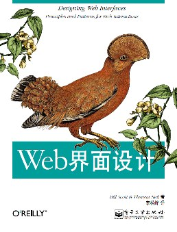

《Web界面设计》

总体观点
Web富交互设计的核心目的不是炫技，而是消除界面的摩擦力。优秀的用户体验让用户在不离开当前工作上下文的前提下，直截了当地完成意图。
全书提炼出Web交互设计的六大根本原则：直截了当、简化交互、足不出户、提供邀请、巧用变换、即时反应。它们构成了桌面级Web应用的模式语言。
通过覆盖层、页内编辑、动态提示与渐进式披露等模式，设计师能让复杂的商业流程变得如轻巧呼吸般自然，达成信息密度与认知负荷的平衡。
核心观点
-
1. 直截了当（Make It Direct）：在原地直接操作对象
不要让用户跳出当前页面去编辑或移动元素，直接在用户注视并点击的地方响应操作。
点击文章标题直接原地变成文本输入框进行修改并保存，而不是点击编辑按钮跳转到后台表单页。 -
2. 简化交互（Keep It Lightweight）：降低操作摩擦与认知成本
提供智能上下文工具，仅在用户悬停或需要时悄然呈现操作按钮，让日常浏览界面保持清爽整洁。
列表每一行的删除、置顶按钮默认隐藏，当鼠标悬停在对应行时才淡入显示，大幅减少视觉噪点。 -
3. 足不出户（Stay on the Page）：保持当前上下文不打断心流
用覆盖层、抽屉和内嵌展开替代整页刷新或页面跳转，用户在不丢失当前浏览进度的前提下完成子任务。
在电商商品列表页点击快速预览，商品详情以模态覆盖层或下方手风琴展开，用户关闭后继续留在列表原有位置。 -
4. 提供邀请（Provide an Invitation）：用视觉暗示引导交互发生
富交互控件如果看起来不可交互就会被用户忽略；必须通过微小的悬停态、游标变换或手柄给用户明确暗示。
表格行左侧放置六个小圆点拖拽手柄，鼠标悬浮时指针变为抓手状，直观告诉用户该行支持拖放排序。 -
5. 巧用变换（Use Transitions）：让界面的每一次变化都符合物理直觉
动画不是为了视觉修饰，而是为了向用户解释状态去向与因果关系，平滑视觉跳跃。
将商品加入购物车时，商品缩略图变成小球划过抛物线飞入右上角购物车图标，用户瞬间明白物品被存放在何处。 -
6. 即时反应（React Immediately）：提供秒级实时反馈
在用户输入或选择的瞬间给出动态响应，让系统感觉敏捷而有生命力，提前纠正错误。
在注册表单输入用户名时，光标离开瞬间立即显示绿勾提示可用，无需等到点击提交才弹出用户名已被占用报错。
全书结构
-
第1章 页内编辑
解析单字段、多字段原地编辑模式，使用户无需跳转即可快速修改并实时保存数据。
Flickr照片详情页中，点击标题即刻变为编辑框，失焦自动Ajax提交保存并变回文本展示。 -
第2章 利用拖放
阐述拖放目标、拖放排序与拖放操作的视觉指示机制，建立符合现实物理习惯的交互。
邮件客户端中，拖动邮件图标放入侧边栏已归档文件夹，移入时文件夹高亮展开作为放置目标邀请。 -
第3章 直接选择
探讨在表格与对象集合中，如何通过复选、套索选择、范围多选等手段直接圈定操作目标。
文件管理系统中按住Shift键连选十个文件，选中区域呈现半透明蓝色高亮并浮现批量操作工具栏。 -
第4章 上下文工具
分析悬停显示、就近弹出和操作工具栏的设计模式，在保持界面干净的同时提供即时操作能力。
在Medium阅读页面中选中一段文字，光标正上方立即浮现精简的加粗、高亮、评论悬浮气泡菜单。 -
第5章 覆盖层
介绍模态与非模态对话框、灯箱效果和信息提示层，实现聚焦特定任务且不破坏底层页面。
点击查看大图时，页面背景半透明暗化，高清大图居中以灯箱覆盖层浮现，按ESC或点击空白处关闭。 -
第6章 嵌入层
讲解在页面原有内容间平滑推开、手风琴式展开更多详情的嵌入层模式，保持整体浏览节奏。
仪表盘表格点击某行行首展开箭头，当前行下方无缝推开显示该笔交易的明细审计记录与报文。 -
第7章 虚拟页面
解析选项卡、传送带、可滚动画布与虚拟分页模式，在紧凑屏幕空间内承载海量维度信息。
新闻首页使用标签页组件，用户点击科技、财经平滑切换内容面板，无需重新加载整站网页框架。 -
第8章 流程处理
重构复杂向导流程，通过分步式内嵌引导、动态配置表单将传统多页向导化繁为简。
结账流程由跳页跳转优化为单页展开步骤条：收货地址验证通过后自动平滑滑出支付方式输入区。 -
第9章 静态邀请
探讨界面中固有的视觉线索、文字提示、空白状态占位符，静态地激发用户探索操作。
空项目看板中展示带有虚线边框与加号的空白卡片，配以一句点击这里创建您的第一个任务引导文案。 -
第10章 动态邀请
分析由用户鼠标悬停、拖拽接近或滚动触发的动态提示，适时揭示隐藏交互潜力。
当鼠标移入列表项边缘时，隐藏的排序把手以微弱动画浮现并伴随指针变成抓手手势。 -
第11章 变换模式
归纳百叶窗、淡入淡出、滑动移位、缩放展开等核心动效模式在Web界面的实现标准。
删除一条待办事项时，卡片先淡出透明，下方各项平滑上滑填补空隙，避免内容突兀瞬跳造成视觉失焦。 -
第12章 变换的目的
论证动效的本质功能：指示因果、维持空间心智模型、转移用户等待注意力和强化品牌感受。
点击折叠侧边栏时，主内容区跟随平滑推移放大，帮助用户理解侧边栏仅仅是退居幕后而非被销毁。 -
第13章 查询模式
详解实时自动补全、即时筛选、动态搜索结果展示模式，让用户在键盘敲击间即刻得到答案。
搜索框输入关键字时，下方实时弹出高亮匹配词、推荐分类与快捷跳转结果，支持上下键直接选中。 -
第14章 反馈模式
剖析进度条、行内状态提示、全局操作轻量Toast通知，消除用户对系统状态的未知恐慌。
用户点击保存配置后，顶部滑出绿色微型提示条显示修改已生效并在3秒后自动消失，绝不阻塞用户继续操作。